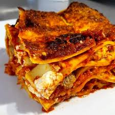

Lasagna Recipe: A Classic Italian Favorite
Home Page
Introduction
Lasagna is one of the most beloved dishes in Italian cuisine. Originating from the Emilia-Romagna region, this layered pasta dish combines rich meat sauce, creamy béchamel (or ricotta in some variations), and melted cheese for a comforting and indulgent meal. Whether made for a family gathering or a special occasion, lasagna is a hearty dish that brings people together around the table.

Ingredients
For the meat sauce (Ragù):
- 500g (1 lb) ground beef (or a mix of beef and pork)
- 1 medium onion, finely chopped
- 1 carrot, finely chopped
- 1 celery stalk, finely chopped
- 2 cloves garlic, minced
- 800g (28 oz) canned crushed tomatoes
- 2 tablespoons tomato paste
- 125ml (½ cup) red wine (optional)
- 250ml (1 cup) beef broth
- 2 tablespoons olive oil
- 1 teaspoon salt
- ½ teaspoon black pepper
- 1 teaspoon dried oregano
- 1 teaspoon dried basil (or fresh basil leaves)
For the Béchamel Sauce:
- 50g (3.5 tbsp) butter
- 50g (⅓ cup) all-purpose flour
- 500ml (2 cups) whole milk
- ½ teaspoon salt
- A pinch of nutmeg
Other Ingredients:
- 12 sheets of lasagna noodles (pre-cooked or fresh)
- 250g (1 cup) ricotta cheese (optional, for a different variation)
- 100g (1 cup) grated Parmesan cheese
- 200g (2 cups) shredded mozzarella cheese
Step-by-Step Guide
Step 1: Prepare the Meat Sauce
- Heat olive oil in a large pan over medium heat.
- Add the chopped onion, carrot, and celery. Sauté for about 5 minutes until softened.
- Add the minced garlic and stir for another minute.
- Add the ground meat and cook until browned. Break it up with a spoon as it cooks.
- Pour in the red wine (if using) and let it evaporate.
- Stir in the tomato paste, crushed tomatoes, beef broth, oregano, basil, salt, and pepper.
- Simmer on low heat for at least 30-40 minutes, stirring occasionally, until thickened.
Step 2: Prepare the Béchamel Sauce
- In a saucepan, melt the butter over medium heat.
- Add the flour and stir continuously for about 1-2 minutes to form a roux.
- Slowly pour in the milk, whisking constantly to prevent lumps.
- Cook until the sauce thickens and coats the back of a spoon.
- Season with salt and a pinch of nutmeg, then remove from heat.
Step 3: Assemble the Lasagna
- Preheat your oven to 180°C (350°F).
- Spread a thin layer of meat sauce at the bottom of a baking dish.
- Place a layer of lasagna sheets over the sauce.
- Spread a layer of meat sauce, followed by a thin layer of béchamel, and a sprinkle of Parmesan.
- Repeat the layers until all ingredients are used, finishing with a layer of béchamel and a generous amount of mozzarella on top.
Step 4: Bake the Lasagna
- Cover with foil and bake for 25 minutes.
- Remove the foil and bake for another 15-20 minutes until golden and bubbling.
- Let it rest for 10 minutes before serving.
Serving Suggestions
Serve the lasagna with a fresh green salad and a glass of red wine, such as Chianti or Sangiovese, for an authentic Italian experience.